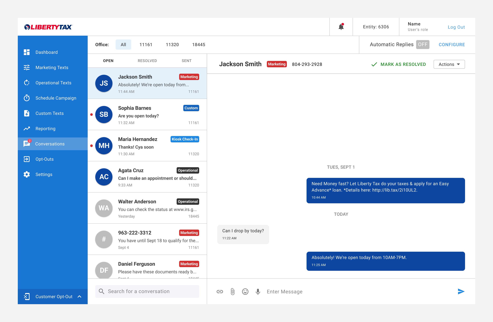
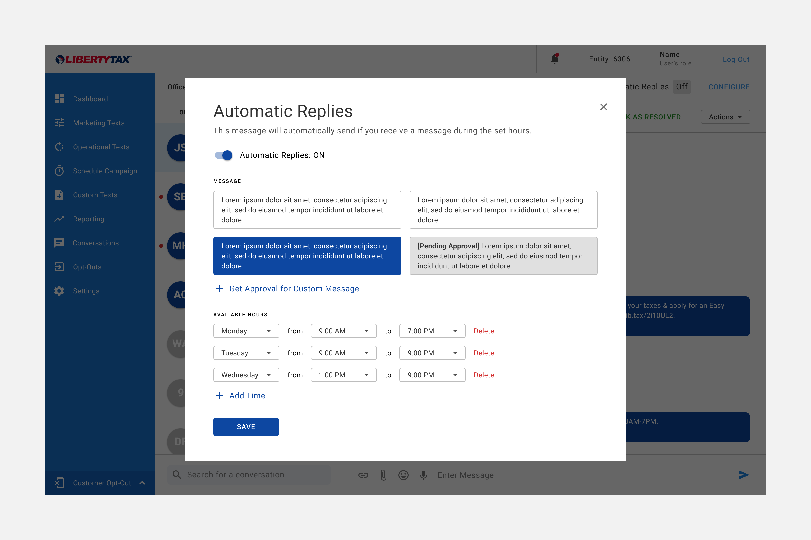
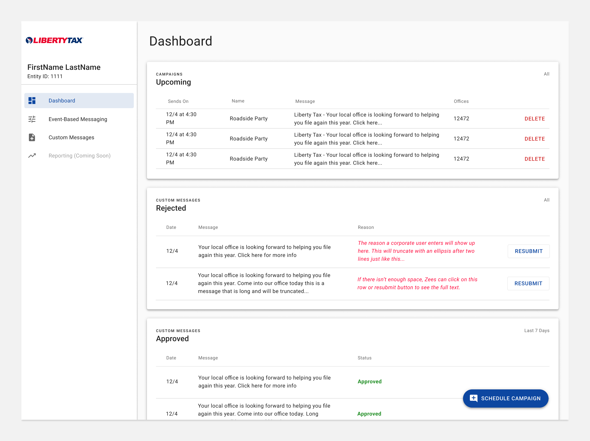
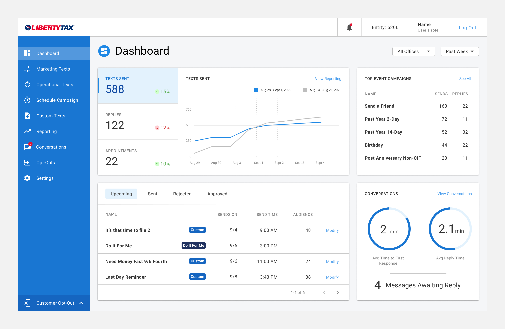

Contactless 2-Way Texting for a COVID-19 World

I led design for a major feature update for FusionText, the SMS marketing platform of a large tax prep firm with over 2,500+ locations nationwide. They relied on bringing customers in-store to complete purchases and provide tax prep advisory, but when the COVID-19 pandemic began they changed course and invested in upgrading FusionText to give their franchisees better high touch contactless channel to engage and retain customers come tax season.
Over 3 months I ran research, scoped and designed the annual update, which included a visual overhaul, dashboard, and 2-Way Texting, the flagship feature. While franchisees could already use FusionText to send marketing texts, 2-Way Texting would allow them to have full conversations with the 600k recipients opted-in to receive messages. They'd be able to maintain existing customer relationships and grow new ones in a contactless world.
I partnered with a Technical Architect and a cross-functional group of client stakeholders in Marketing, Engineering, and Franchise owners to prioritize features and solicit design feedback.
2-Way Texting
I was fortunate enough to interview a few pioneering franchise owners who had already implemented 2-Way Texting. I interviewed a few of these pioneers to understand potential pitfalls to get ahead of and successes to replicate.

Sounding Like a Real Person
And less like a corporate entity. This was the biggest factor in developing strong customer relationships, especially connecting with younger customers. Pioneering franchisees pressed that having richer non-verbals - emojis, images, and gifs helped build rapport and convert customers. I invited a franchisee owner to one of our prioritization sessions to help make the case and the client agreed on moving it up in the roadmap.
Employee Safety
Franchisees were worried about upset customers using 2-Way Texting to harass or send inappropriate employees. Horror stories were unfortunately common, and the stress of tax season compounds the issue. I included a feature to block numbers so that employees could protect themselves from customers who might abuse 2-Way Texting.
Automatic Replies

Franchisees didn't have the staff to handle messages 24/7 so they needed a way to handle after-hours messages and let customers know when they'll be active next. Store hours varied wildly so I designed Automatic Replies to give users as much flexibility over the time frame and message. There wasn't a one-size-fits-all message for all 2500+ locations.
Dashboard Visual Update
One of the top customer requests was for more metrics and insight into how their text marketing campaigns performed. I reworked the dashboard to provide at-a-glance metrics and brought in more of the brand palette.
Before

After

I collaborated with engineering and spent some time with MUI documentation to identify efficient ways to use the grid utilities and color system to understand what would be supported to incorporate more of the brand palette into FusionText without introducing too much complexity.